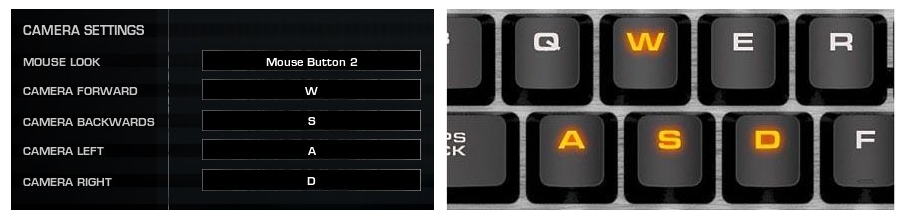
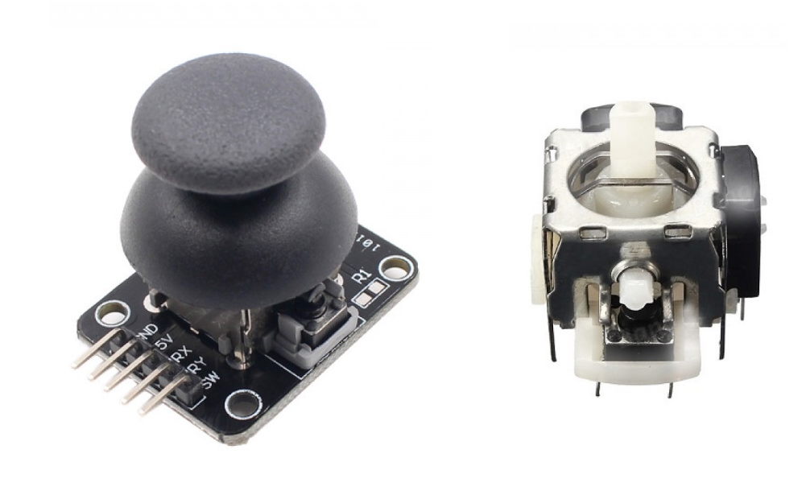
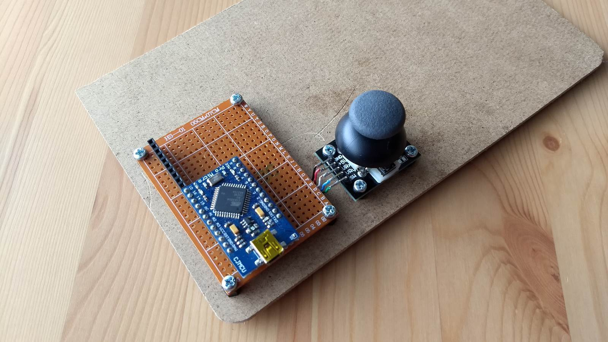

Control video game camera movement with thumb joystick
Video games typically use the WSAD keys to control an 'invisible' overhead camera which represents a player's overview of the battlefield. For casual gamers who have not developed the finger memory to move the camera effortlessly, a joystick is more intuitive.
A Jaycar thumb joystick together with an Arduino Pro Micro is perfect for the job. The Arduino Pro Micro emulates a HID keyboard which sends the WSAD keypresses to the PC in response to joystick positions.
 
The Arduino Pro Micro was mounted onto female headers instead of being soldered to the board to allow a different microcontroller with USB to be used in future. The STM32F103 blue pill is an ideal candidate but the HID library currently does not work.
Schematic

Code
The Arduino Pro Micro sketch is found in my Github repository. The joystick is physically attached to a piece of MDF board with the pins pointing to the right. This works well for controlling the joystick with left hand while using the mouse with right. The placement is important as the ADC values returned by the analog X/Y potentiometers depend on the orientation of the joystick. To change the placement, you must obtain the ADC values of the various positions (N,S,E,W,NE,SE,SW,NW) before modifying the code accordingly.Usage
The main reason for this project was to improve my playing of an oldie-but-goodie RTT game called World In Conflict. This was a best-seller among computer games in 2007 and the graphics are still pretty impressive even by today's standards. Plenty of videos on youtube showing how to micromanage your units in battle and make tactical command decisions.Video of thumb joystick in action moving the camera during a game. The smooth movements are comparable to using the WSAD keys on the keyboard. In addition to WSAD movements the joystick has a built-in switch which goes to the drop zone when clicked.